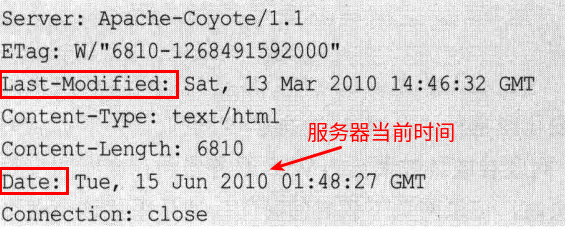
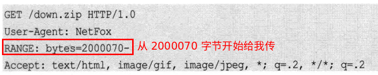
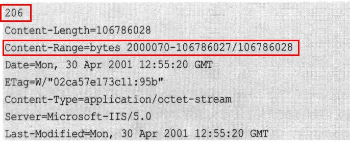

DNS 解析是一个网络爬虫性能瓶颈。由于域名服务器的分布式特点，DNS 可能需要多次请求转发，并在互联网上往返，需要几秒有时甚至更长时间解析出 IP 地址。一个补救措施是引入 DNS 缓存，这样最近完成 DNS 查询的网址可能会在 DNS 缓存中找到，避免了访问互联网上的 DNS 服务器。JDK 1.6 内部有个 30 秒的 DNS 缓存，通过 sun.net.InetAddressCachePolicy.get() 方法可以查看缓存时间设置。Java 要查找一个域名 IP 地址最方便的办法就是:
1 | List<String> ipList = new ArrayList<String>(); |
HttpClient 抓取每个 URL 时，JVM 都会自动缓存这个 URL 和对应的 IP，并且永远缓存，除非缓存的内容大于 JVM 的限制，如果将来这个 URL 更换了 IP，HttpClient 会首先去 JVM 的缓存里取，如果取到了直接根据这个 IP 去抓取。所以往往某个域名更换了 IP，抓取结果都是 604 错误。
解决办法是在 Java 代码里添加如下所示的代码:
1 | java.security.Security.setProperty("networkaddress.cache.ttl", "0"); |
1 | URLEncoder.encode("http://lietu.com/case/价格搜索.ppt", "UTF-8"); |
URLEncoder.encode 方法处理空格有问题。空格符 (ASCII 码是 0x20) 经过 java.net.URLEncoder 类 encode 以后，会变成 + 号，而不是 %20，所以使用 java.net.URI 中的编码功能。
1 | String data = new URI(null, term, null).toASCIIString(); |
Referer 防止图片盗链爬虫有时候需要设置这个值:
1 | Referer: http://www.w3.org/hypertext/DataSources/Overview.html |
1 | if (header[i].getName().equalsIgnoreCase("gzip")) { |
1 | zk@zk-pc:~$ sysctl net.ipv4.ip_local_port_range |
这基本上意味着任何时候系统不能保证多于
1 | (60999 - 32768) / 60 = 470 socket |
可以增加 port_range，设置范围到 15000 60999 很常见。可以通过减少 fin_timeout 进一步增加可获得的连接，同时做到这两部，可以有多于 1500 个连接。
使用 sysctl 能够改变正在运行的 Linux 系统接口:
1 | sysctl -w net.ipv4.tcp_fin_timeout = 30 |
也可以编辑 /etc/sysctl.conf 文件来修改。
可以用 HTTP 的 HEAD 命令查看网页的最后修改时间。

有些网页头信息没有包括更新时间，这时候也可以通过判断网页长度来检测网页是否有更新。当然也可能更新了，但是长度没变，实际上，这种可能性非常小。
条件下载命令可以根据时间条件下载网页。再次请求已经抓取过的页面时，爬虫往 Web 服务器发送 If-Modified-Since 请求头，如果有修改，返回 200，未修改，返回 304。
HTTP/1.1 还有一个 Etag 可以通过发送 If-None-Match 用来判断请求的文件是否被修改，可以把 Etag 看成网页的版本标志。Etag 主要为了解决 Last-Modified 无法解决的一些问题。
If-Modified-Since 无法判断秒级的变化。可以用 Range:bytes=0-500 条件下载部分网页。

服务器返回信息如下:

1 | RandomAccess savedFile = new RandomAccessFile("down.zip", "rw"); |
有些网站专门发布免费的代理列表 (HTTP free proxy list)，可以从这些网站抓到免费代理的 IP 地址以及端口号，然后建立有效代理列表。
1 | URL fromURL = new URL("http://www.lietu.com/news/"); |
org.apache.http.client.utils.URIUtils 中有一个 resolve 方法可以用来根据 URL 地址生成绝对 URL 地址:
1 | URIUtils.resolve(this.baseURI, "/g"); |
URL 地址中的 # 指向内部锚点，对于爬虫没有意义。
归一化: 将这个 URL 唯一化。
Mozilla 发布了纯 Java 语言编写的 JavaScript 脚本解释引擎 Rhino。